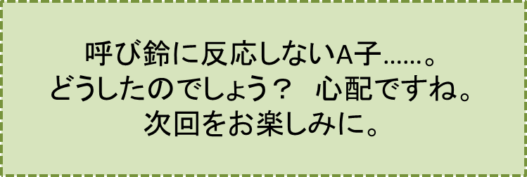

2センチの隙間-PART4-
『我が回想：楽しかりし、A子との日々』の巻
笠原正雄
浪人3年目の夏休み以降、受験勉強のために過ごした期間はこれまでの生涯の中でも、夢のように楽しい最高の半年間だったでしょう。
A子は学校から帰ってくると、ものの十分も経たないうちに
“とーん、とん” “とーん、とん”
と軽やかな足音を小さく立てながら、階段を駆け上がり私の勉強部屋に姿を現わします。
「ただ今！ お待たせしました」
と元気一杯のあいさつです。私も
「お帰りなさい！ お疲れさま」
と喜びを隠すことなく満面の笑みでA子を迎えます。
彼女は、大きな総栃製の机の半分を占領し、教科書や参考書を早速広げます。
勉強に励む私達2人のために、母が心をこめて作ってくれた夕食を、机の上にきれいに手際よく並べると、さぁ勉強部屋は洒落たパリ風レストランに早変わりです。
楽しい勉強時間ですが、夜12時を回ると彼女の帰宅時間。用心のためにということで、歩いて僅か30秒足らずの隣家玄関口まで見送ります。
充実した内容たっぷりの半年間、あっという間に過ぎていきます。
浪人3年目のフィナーレ、舞学園大学の入試を私は胸を張って自信満々で受験です。昨年一昨年とは全く違います。自信のレベルが違います。
我が生涯4回目の受験の手ごたえは、十二分だったでしょう。合格することは100パーセント間違いないと自信たっぷりで結果を待ちます。
“まさか！”
という結果は、今年に限り絶対に起こらないという強い自信がある一方で、A子が無事に合格してくれるだろうか、このことだけが唯一心配の種として心の中に残りました。
さて合格発表の結果はどうだったでしょう。
ご安心下さい！
“桜二輪、春の大空に見事咲く！”
でした。
4月から私達は希望一杯、2人そろって仲よく舞学園大学に通うことになります。
確実にこうなるだろうと自信をもって予想していたことですが、いざ起こってみると、計り知れない程の大きな喜びが全身に溢れ出てきます。
私達は決して浮かれてばかりではありませんでした。大学入学後の最初の講義が開始されたその日から、1日も欠かさずあらゆる講義を最前列に座って2人一緒に聴講しました。
50名程のクラスメート達は、私達を
“将来を約束し合ったカップルかな？”
“いや、ひょっとしたら既にご夫婦？”
などと勝手に想像したことでしょう。先生方も、いつも最前列に陣取る私達を同じような印象でご覧になっていたでしょう。
大学に入学してからの私達の学習風景は受験時代と全く変わりませんでした。夕食を2階でともにし、夜半12時過ぎまで楽しい会話なども交わしながら、その日に習った講義の復習予習をしました。
私達の目標はクラスのトップ、“首席”で卒業することです。この意味ではお互いに最強のライバルだったでしょう。
A子が繰り返し語る言葉は、
“外交官である父は、米国、ドイツ、イタリア等の国々での体験談として、米欧の大学生の勉強ぶりは物凄いものがある、四当五落なのかも知れないと言っていたわ”
“つまり4時間睡眠で頑張れば、大学を卒業することができるけれど、5時間寝ていては卒業がおぼつかないってことよ。本当かしら？ とても信じられない……”
“私達、すっごく勉強しているようだけれど、欧米の大学生には遠く及ばないかもねぇ”
等々だったでしょう。A子は、この時だけは自信喪失とばかりに、吐息をつきながら話します。
こんな会話も2人の間で交わされましたけれど、欧米の大学生に負けまいと悲壮な決意で、歯を食いしばって頑張っていたわけではありません。楽しさ一杯の毎日です。4年間、是非この態勢で頑張りたい。私の強い願いです。
……しかし、あぁしかし、ある日突然玄関口での私の呼び鈴に、はんこを付いたように毎朝元気にとび出して来てくれるA子が、幾ら待っても玄関口に現れません！あぁ、どうしたのでしょう！？
